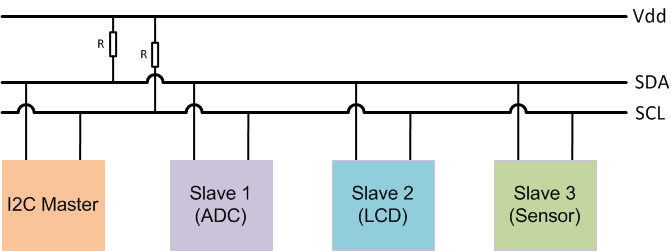
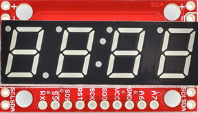

Controlling a 4-Digit 7-Segment Display Using I2C
This example shows you how to use the I2C peripheral on Raspberry Pi® hardware to control a 4-digit 7-segment display.
Contents
Introduction
Raspberry Pi hardware includes an I2C peripheral. The I2C peripheral enables you to connect devices supporting I2C protocol directly to Raspberry Pi hardware. There is a wide variety of sensors, displays, ADC's, DAC's, etc. supporting I2C communications. By using these devices you can add new capabilities to your Raspberry Pi projects.
In this example, we will concentrate on controlling a 4-digit 7-segment display via I2C. We will start by providing an overview of I2C communications in general and then focus on the display and specifics of I2C commands it supports. We will learn about MATLAB command interface for I2C devices and finally finish the example by displaying numbers and simple characters.
Prerequisites
- We recommend completing Getting Started with MATLAB Support Package for Raspberry Pi Hardware example.
Required Hardware
To run this example you will need the following hardware:
- Raspberry Pi hardware
- A power supply with at least 1A output
- Breadboard and jumper cables
- A 4-digit, 7-segment display with I2C interface from SparkFun
Overview of I2C
Inter-Integrated Circuit (I2C) is a multi-master serial single-ended communication protocol used for attaching low-speed peripherals to an embedded system.

I2C uses two bidirectional lines, serial data line (SDA) and serial clock (SCL). Both of these lines are pulled up with resistors. Each slave device on the I2C bus is assigned a 7-bit or 10-bit address. I2C devices with 10-bit addresses are rare and not supported by the Raspberry Pi hardware. With a 7-bit address space, up to 128 devices can be connected to an I2C bus. I2C bus speeds can range from 100 Kbits/s for slow mode to 400 Kbits/s for high speed mode.
Raspberry Pi hardware has two I2C buses. Depending on the model and revision of your board, one of the I2C buses may not be available. The I2C pins on the 2x13 expansion pins are pulled up with 1.8 KOhm resistors.
View available I2C buses
In the default Raspbian Linux image, the I2C peripheral is enabled. You can find out available I2C buses on the Raspberry Pi hardware by inspecting the AvailableI2CBuses property of the raspi object.
clear rpi
rpi = raspi();
rpi.AvailableI2CBuses
Inspecting the AvailableI2CBuses property of the rpi should yield at least one I2C bus being listed on the MATLAB command prompt.
Overview of 4-digit 7-segment display
The 4-digit 7-segment display from SparkFun is a 4-digit alpha-numeric display with TTL serial, SPI or I2C interface.

This device can display numbers, most letters and a few special characters. Decimal points, apostrophes and colons are supported. Brightness of the display can be adjusted. The display has a simple control interface where the master device, Raspberry Pi hardware in this case, issues commands with parameters to the display device over I2C bus. For example, to clear the display master sends a command byte of '0x76'. To set the cursor to a particular position, master sends a command byte of '0x79' followed by a byte indicating cursor position (0 to 3). A comprehensive list of commands is shown in the table below.
| Command | Command byte | Data byte range | Data byte description |
| Clear display | 0x76 | None | |
| Decimal control | 0x77 | 0-63 | 1-bit per decimal |
| Cursor control | 0x79 | 0-3 | 0=left-most, 3=right-most |
| Brightness control | 0x7A | 0-255 | 0=dimmest, 255=brightest |
| Digit 1 control | 0x7B | 0-127 | 1-bit per segment |
| Digit 2 control | 0x7C | 0-127 | 1-bit per segment |
| Digit 3 control | 0x7D | 0-127 | 1-bit per segment |
| Digit 4 control | 0x7E | 0-127 | 1-bit per segment |
| Baud rate config | 0x7F | 0-11 | See baud rate command in datasheet |
| I2C Address configuration | 0x80 | 1-126 | New I2C address |
| Factory reset | 0x81 | None |
Connect the display
To interface the display to Raspberry Pi hardware you need to do some light soldering. Since we are using the I2C interface of the display in this example, solder jumper wires to the SDA, SCL, GND and VCC pins of the display. You may also choose to solder some straight male headers to be able to mount the display on a breadboard for prototyping. Before going any further, you may also want to follow manufacturer's hardware assembly guide.
Follow the circuit diagram shown below to connect the display to Raspberry Pi hardware.

Scan I2C bus
Once you connected the display to the Raspberry Pi hardware, you are ready to test if Raspberry Pi hardware sees it on the I2C bus.
clear rpi rpi = raspi(); for i = 1:length(rpi.AvailableI2CBuses) scanI2CBus(rpi, rpi.AvailableI2CBuses{i}) end
The scanI2CBus() method scans the given I2C bus and returns a cell array of device addresses on the bus. If you connected the display to Raspberry Pi hardware correctly, the snippet of MATLAB code above should return a device address of '0x71'. This is the factory default address of the display.
Display a number
Let's start by creating an i2cdev object that will allow us to talk to the display using I2C.
segmentDisp = i2cdev(rpi, '<I2C bus>', '0x71');
Where '<I2C bus>' is the name of the I2C bus the display is detected. Remember that depending on the version of your Raspberry Pi hardware, the bus name may change. So make sure that you supply the correct I2C bus when constructing the segmentDisp object.
According to the command table for the display, sending a byte in the range 0 - 0xf results in a hexadecimal number represented by the byte to be displayed. The cursor is initially at position 0, which is the left most digit, and advances one position each time a character is displayed.
write(segmentDisp, 0);
This should display a '0' on the left most digit of the display. Let's display a couple of more characters.
write(segmentDisp, 7); write(segmentDisp, hex2dec('a')); write(segmentDisp, hex2dec('b'));
After executing the commands above, you should see '07ab' displayed on the segmented display.
Clear display screen
To clear the display screen we will follow the datasheet and send '0x76' to the display.
write(segmentDisp, hex2dec('76'));
Set cursor position
To display a particular character at a particular cursor position, you may want to set the cursor position.
write(segmentDisp, [hex2dec('79'), 2]);
write(segmentDisp, 9);
The commands above will display a '9' at the second digit position of the display.
Advanced: Create a MATLAB class for segment display
You can put all the things we learned about the segment display together and create a MATLAB class for it. This MATLAB class has methods for setting the cursor position, clearing the display screen, printing numbers, etc. As an example, we created such a class. Here is an example of how you would use this class.
clear segmentDisp sd = raspi.internal.segmentdisplay(rpi, <I2C bus>, <I2C address>) clr(sd); % Clear screen print(sd, '112'); print(sd, 'dead'); print(sd, 'beef');
Note that before creating the class, we cleared the original i2cdev object called segmentDisp. You are allowed to create a single object per I2C device. The segmentdisplay class internally creates an i2cdev object. Hence you need to clear any i2cdev objects connected to the display from MATLAB workspace before instantiating the segmentdisplay.
The segmentdisplay class tries to reduce flickering caused by clearing / re-displaying numbers. It does so by caching the displayed characters and updating only those that are different. Not all features supported by the segmented display are implemented. You can use the MATLAB class we created as a starting point for your own implementation. Here is a MATLAB code snippet implementing an up counter:
N = 1000; delay = 0.01; clr(sd); for i = 1:N print(sd,num2str(i)); pause(delay); end
Summary
This example introduced the workflow for working with I2C interface. You learned how to control a 4-digit 7-segment display to display hexadecimal numbers.